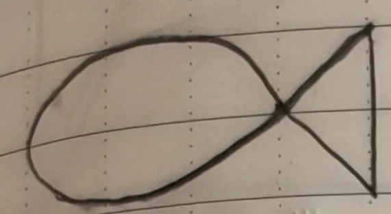
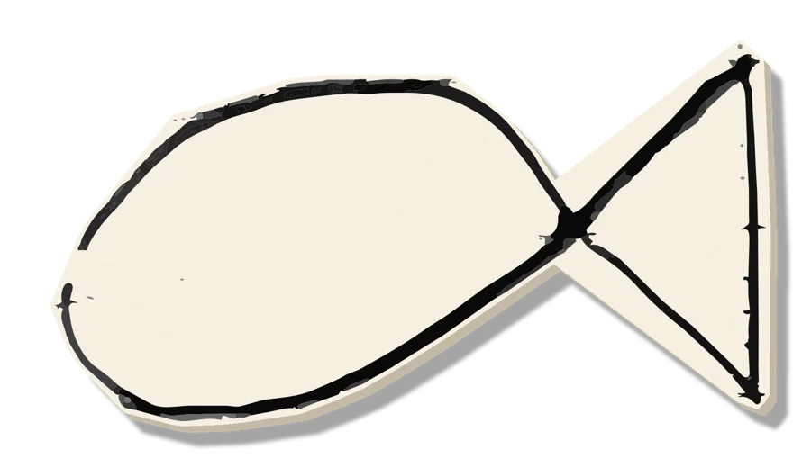

Fish


≈ 55 × 30 × 2 mm
Drawing 11 · Combining Analog and Digital Tools
Pencil motifs from my sketchbook, traced into vectors in Illustrator, then rebuilt as 2 mm paper-cutout objects. These are the first brushes for Drawingroom, an AR tool that turns hand-drawn motifs into a palette for drawing in space.